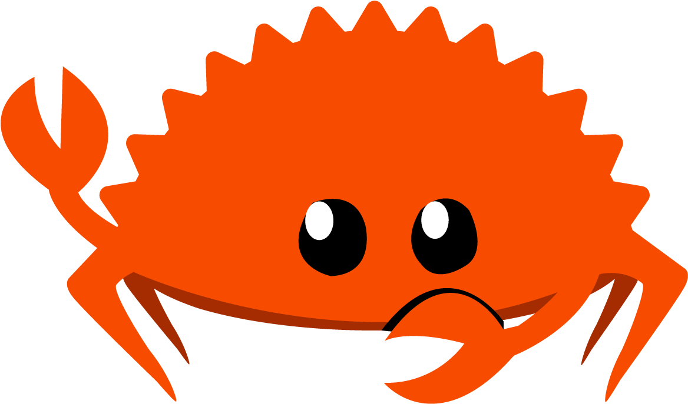
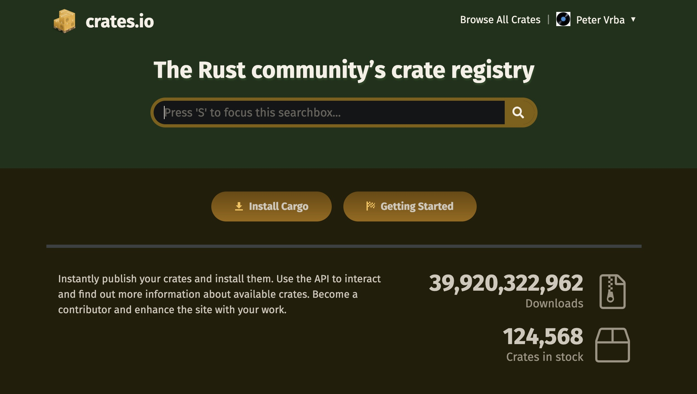

Rust programming language
Ferris says Hi!

History
-
Started in 2006 by Graydon Hoare at Mozilla.
-
First announced in 2010
- Primary goals: a fast and secure expression oriented language (you can pick any two)
- Parts of Firefox are written in Rust
- most admired programming language, making it the most loved language for 8 years in a row
-
First stable release in 2015
- New releases every 6 weeks, “edition 2021” released in Oct '21
-
Who uses it?
- AWS: Firecracker powers Lambda and Fargate
- Google: parts of the Fuchsia operating system
- Linux: 2nd official language for the Kernel!
- Dropbox: file storage
- Growing ecosystem for embedded development
- Microsoft - Windows 11
Why Rust?
The main purpose of using Rust is enhanced safety, speed, and concurrency, or the ability to run multiple computations parallelly. In simple words, Rust is used for three essential purposes in programming; performance, safety, and memory management
Zero-cost abstractions
Rust is a low-level language that provides zero-cost abstractions. It means that Rust provides the same level of control as C and C++ but without the risk of memory leaks and segmentation faults. These abstractions are implemented and enforced by the compiler, but don't add any overhead to the runtime of your program.
Getting started: rustup & cargo
Rustup: the Rust toolchain manager
Manage versions, target OS and architectures
curl https://sh.rustup.rs -sSf | sh
or download from https://rustup.rs/
rustup doc --std -- browse the docs locally!
Cargo: the Rust build system
cargo new --bin rust_intro
cargo run
.
├── Cargo.toml
└── src
└── main.rs
Package registry
All packages are exposed at crates.io, currently there are over 120.000 packages available.
We are using packages from crates.io as dependencies of our projects, but you can also share your code with other people by publishing your own packages. The crate registry at crates.io distributes the source code of your packages, so it primarily hosts code that is open source.

Modules
Rust provides a powerful module system that can be used to hierarchically split code in logical units (modules), and manage visibility (public/private) between them.
A module is a collection of items: functions, structs, traits, impl blocks, and even other modules.
.
├── Cargo.toml
└── src
└── lib.rs
└── module
└── mod.rs
└── hello.rs
In mod.rs we need to add pub mod hello; to make it visible to the outside world.
#![allow(unused)] fn main() { pub mod hello; }
Also in lib.rs we need to have
#![allow(unused)] fn main() { pub mod module; }
You can also provide modules directly in rust file
#![allow(unused)] fn main() { pub mod hello { pub fn world() { println!("Hello, world!"); } } }
Basic types
Rust provides basic types similar to other programming languages:
- signed integers:
i8,i16,i32,i64,i128,isize - unsigned integers:
u8,u16,u32,u64,u128,usize - floating point:
f32,f64 - boolean:
bool - strings:
&strandString(we have way to many string types) - structs:
struct - tuples:
tuple - enums:
enum - arrays:
[T; N] - unit type:
()
Type inference is a feature of Rust that allows the compiler to determine the type of a value based on the context in which it is used. This means that, in many cases, you don't need to explicitly specify the type of a variable or function parameter.
fn main() { // Because of the annotation, the compiler knows that `elem` has type u8. let elem = 5u8; // Create an empty vector (a growable array). let mut vec = Vec::new(); // At this point the compiler doesn't know the exact type of `vec`, it // just knows that it's a vector of something (`Vec<_>`). // Insert `elem` in the vector. vec.push(elem); // Aha! Now the compiler knows that `vec` is a vector of `u8`s (`Vec<u8>`) // TODO ^ Try commenting out the `vec.push(elem)` line println!("{:?}", vec); }
Functions
Functions are declared using the fn keyword. Its arguments are type annotated, just like variables, and, if the function returns a value, the return type must be specified after an arrow ->.
The final expression in the function will be used as return value. Alternatively, the return statement can be used to return a value earlier from within the function, even from inside loops or if statements.
Rust code uses snake case as the conventional style for function and variable names, in which all letters are lowercase and underscores separate words.
#![allow(unused)] fn main() { /// Adds one to the number given. /// /// # Examples /// /// ``` /// let arg = 5; /// let answer = my_crate::add_one(arg); /// /// assert_eq!(6, answer); /// ``` pub fn add_one(x: i32) -> i32 { x + 1 } // Example of generic function pub fn print<T: Debug>(input: T) { println!("{:?}", input); } }
Structures
There are three types of structures ("structs") that can be created using the struct keyword:
- Tuple structs, which are, basically, named tuples.
- The classic C structs
- Unit structs, which are field-less, are useful for generics.
#![allow(unused)] fn main() { #[derive(Debug, Default)] #[repr(C)] struct Person { name: String, age: u8, } // A unit struct struct Unit; // A tuple struct struct Pair(i32, f32); }
Implementations of structs
#![allow(unused)] fn main() { impl Person { fn new(name: String) -> Val { Person { name, ..Default::default() } } fn set_name(&mut self, name: String) -> &f64 { &self.name = name; } fn print_name(&self) { println!("Name: {}", self.name); } fn into_string(self) -> String { format!("Hello {}, age: {}", self.name, self.age) } } }
Enums
An enum in Rust is a type that represents data that is one of several possible variants. Each variant in the enum can optionally have data associated with it:
#![allow(unused)] fn main() { enum Message { Quit, ChangeColor(i32, i32, i32), Move { x: i32, y: i32 }, Write(String), } }
Immutability by default
Rust variables are immutable by default
#![allow(unused)] fn main() { let hello = 42; hello = 43; }
We need to explicitly mark variable as mutable by using mut keyword
fn main() { let mut sum = 0; for i in 0..5 { sum += i; } println!("sum is {}", sum); }
Memory safety
Rust's approach to memory safety is based on two key concepts: ownership and borrowing. These concepts are enforced by Rust's compiler and prevent common memory-related bugs like null pointers, use-after-free errors, and buffer overflows. Ownership is Rust’s most unique feature and has deep implications for the rest of the language. It enables Rust to make memory safety guarantees without needing a garbage collector, so it’s important to understand how ownership works.
Ownership and borrowing
Ownership is Rust’s most unique feature and has deep implications for the rest of the language. It enables Rust to make memory safety guarantees without needing a garbage collector, so it’s important to understand how ownership works.
#![allow(unused)] fn main() { // name argument is now owned by print_name function fn print_name(name: String) { println!("Hello, {}!", name); } // prepare name variable let name = "Peter".to_string(); // now we pass ownership to print_name function print_name(name); // This will not compile println!("{}", name); }
Ownership and borrowing 2
We can borrow given string so we can use it after function returns back
#![allow(unused)] fn main() { // name fn print_name(name: &String) { println!("Hello, {}!", name); } // prepare name variable let name = "Peter".to_string(); // now we pass ownership to print_name function print_name(&name); // This will not compile println!("{}", name); }
With mutable borrows we can even modify borrowed variable
#![allow(unused)] fn main() { fn update_name(name: &mut String) { name.push_str("!"); } // prepare name variable let mut name = "Peter".to_string(); // now we pass ownership to print_name function update_name(&mut name); // This will not compile println!("{}", name); }
Lifetimes
A lifetime is a construct of the compiler (or more specifically, its borrow checker) uses to ensure all borrows are valid. Specifically, a variable's lifetime begins when it is created and ends when it is destroyed. While lifetimes and scopes are often referred to together, they are not the same.
Take, for example, the case where we borrow a variable via &. The borrow has a lifetime that is determined by where it is declared. As a result, the borrow is valid as long as it ends before the lender is destroyed. However, the scope of the borrow is determined by where the reference is used.
#![allow(unused)] fn main() { fn longest<'a>( x: &'a str, y: &'a str, ) -> &'a str { if x.len() > y.len() { x } else { y } } }
Traits
A trait defines functionality a particular type has and can share with other types. We can use traits to define shared behavior in an abstract way. We can use trait bounds to specify that a generic type can be any type that has certain behavior.
#![allow(unused)] fn main() { pub trait Summary { fn summarize(&self) -> String; } }
There are a lot of traits in the standard library. For example,
ToStringtrait is implemented by any type that can be converted into aStringvalue. We can use theto_stringmethod defined by theToStringtrait to convert a number into aString:Intotrait is implemented by any type that can be converted into another type.Fromtrait is implemented by any type that can be created from another type.Debugtrait is used to format a value using the{:?}formatter.std::opsmodule contains traits for overloading operators.
Some traits can be implemented by deriving them. For example, the Debug trait can be implemented by deriving it:
#![allow(unused)] fn main() { #[derive(Debug)] pub struct Point { x: i32, y: i32, } }
This means that they use derive macros to generate the implementation. We can also implement traits manually:
#![allow(unused)] fn main() { pub struct Point { x: i32, y: i32, } impl Debug for Point { fn fmt(&self, f: &mut Formatter<'_>) -> Result<(), Error> { write!(f, "Point {{ x: {}, y: {} }}", self.x, self.y) } } }
Pattern matching
Patterns are a special syntax in Rust for matching against the structure of types, both complex and simple. Using patterns in conjunction with match expressions and other constructs gives you more control over a program’s control flow.
fn main() { let v = vec![10, 20, 30]; let idx = 0; match v.get(idx) { Some(value) => println!("Value is {}", value), None => println!("No value..."), } }
Even more advanced pattern matching
fn main() { let n = 0; let text = match n { 0 => "zero", 1 => "one", 2 => "two", _ => "many", }; println!("{} is {}", n, text); }
Pattern matching 2
Every pattern matching must be exhaustive (all possible cases must be covered). Lets see an enum example:
#![allow(unused)] fn main() { enum Color { Red, Green, Blue, } let color = Color::Red; let name = match color { Color::Red => "red", Color::Green => "green", }; }
Generics
We use generics to create definitions for items like function signatures or structs, which we can then use with many different concrete data types.
#![allow(unused)] fn main() { pub struct Hello<T> { pub message: T, } }
We will explore them in next slides.
Standard library
The Rust Standard Library is the foundation of portable Rust software, a set of minimal and battle-tested shared abstractions for the broader Rust ecosystem. It offers core types
Such as Vector, Option, Result, and String, library-defined operations on language primitives, standard macros, I/O and multithreading, among many other things.
Some modules that are in std lib are:
std::collections- Collection types.std::fs- Filesystemstd::io- Input/Outputstd::net- Networkingstd::process- Processesstd::thread- Threadsstd::time- Timestd::path- Path manipulationstd::env- Environment variablesstd::error- Interfaces for working with Errors
Option<T>
Option type is a type that represents an optional value. It is either Some(value) or None.
#![allow(unused)] fn main() { pub type Option<T> { pub Some(T), pub None } }
Pattern matching is a way to extract data from an Option.
#![allow(unused)] fn main() { let x = Some(5); match x { Some(i) => println!("i = {}", i), None => println!("no value"), } }
Result<T, E>
Result type represent either success (Ok) or failure (Err).
It provides a lot of useful methods to inspect it. We can use pattern matching to extract data from a Result.
#![allow(unused)] fn main() { let result: Result<i32, ()> = Ok(5); match result { Ok(i) => println!("i = {}", i), Err(_) => println!("no value"), } }
Error handling
Matching on result (and option) is nice, but it would be tedious to write this code every time we want to extract data from a Result.
That's where ? operator comes in handy.
pub fn process() -> Result<String, String> { Ok("ok".to_string()) } pub fn outer() -> Result<String, String> { let result = process()?; Ok(result) }
? operator can be used only in functions that return Result or Option.
Iterators and Cosures
Rust’s design has taken inspiration from many existing languages and techniques, and one significant influence is functional programming. Programming in a functional style often includes using functions as values by passing them in arguments, returning them from other functions, assigning them to variables for later execution, and so forth.
#![allow(unused)] fn main() { let v1 = vec![1, 2, 3]; let v1_iter = v1.iter(); for val in v1_iter { println!("Got: {}", val); } }
Or even more complicated use of iterator
#![allow(unused)] fn main() { let x = (1..10) .map(|x| x + 1) .filter(|x| x % 2 == 0) .map(|x| x.to_string()) .collect::<Vec<_>>(); }
Macros
Rust macros are a powerful tool that allow you to write code that writes code. Macros are used to extend the language itself. They are similar to C/C++ macros, but they are much more powerful and safer. We call them hygienic macros because they are designed to prevent unintended side-effects and bugs.
There are multiple types of macros in Rust:
- Declarative macros with
macro_rules!syntax - Procedural macros
- Custom
#[derive]macros - Attribute-like macros
- Function-like macros
- Custom
This solves some of rust limitations. They are powerful and can be used to extend the language itself.
Async/Await
Even that rust provides fearless concurrency, it's not always the best choice to use multithreading. Rust provides async await keywords support to write asynchronous code. It does not provide actual implementation of async runtime, but it provides all necessary tools to write asynchronous code.
End
So you reached the end of my presentation.
But this is not all. There is way more to Rust than I could cover in this presentation. I hope you will give it a try and maybe even use it in your next project.
This presentation will be available on my github account, so you can check it out later.
Links:
- https://www.rust-lang.org/ - Rust Homepage
- https://doc.rust-lang.org/book/ - The Book
- https://doc.rust-lang.org/rust-by-example/ - Rust by Example
- https://rust-unofficial.github.io/too-many-lists/ - Too Many Lists
- https://www.reddit.com/r/rust/ - Rust Subreddit
- https://play.rust-lang.org/ - Rust Playground
- https://libs.rs/ - Rust Libraries
- https://crates.io/ - Rust Crates
- https://tokio.rs/ - Tokio
- https://github.com/rust-lang/rustlings - Rustlings
- https://doc.rust-lang.org/nomicon/ - The Rustonomicon
- https://github.com/rust-lang/rust-bindgen - Rust Bindgen
- https://cxx.rs/ - CXX